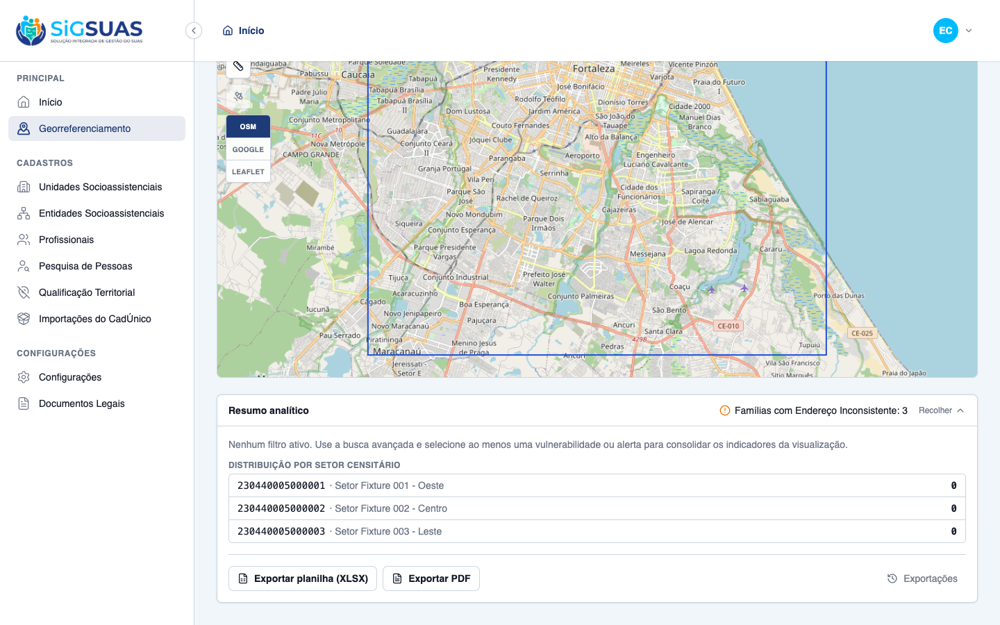
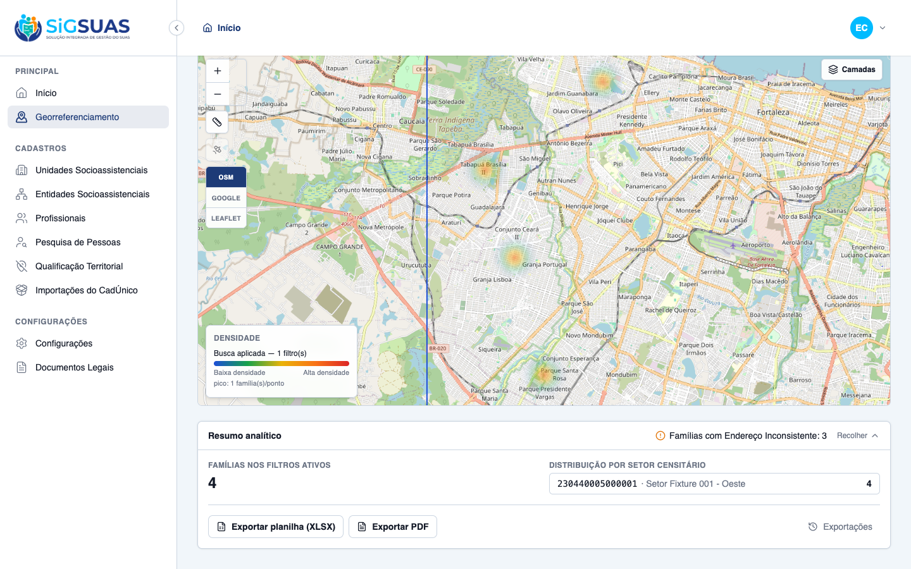
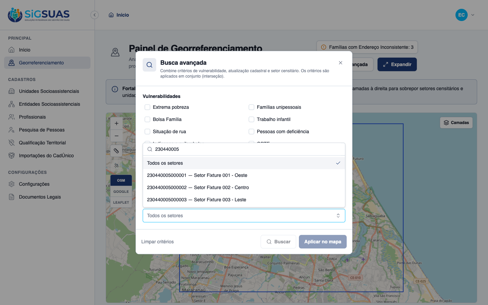
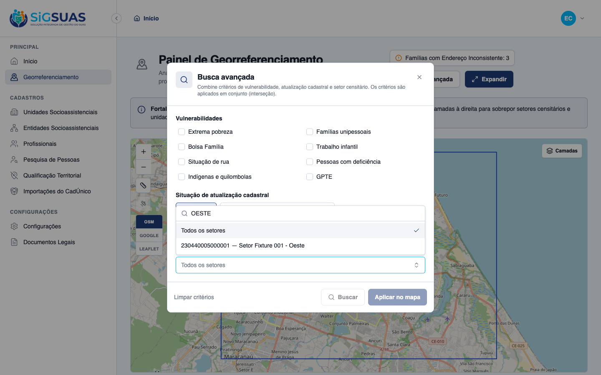
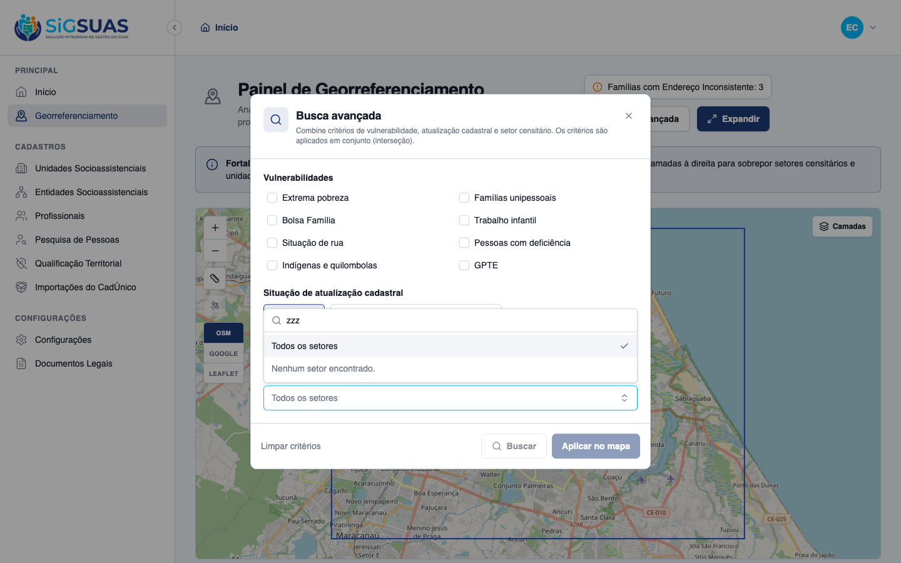
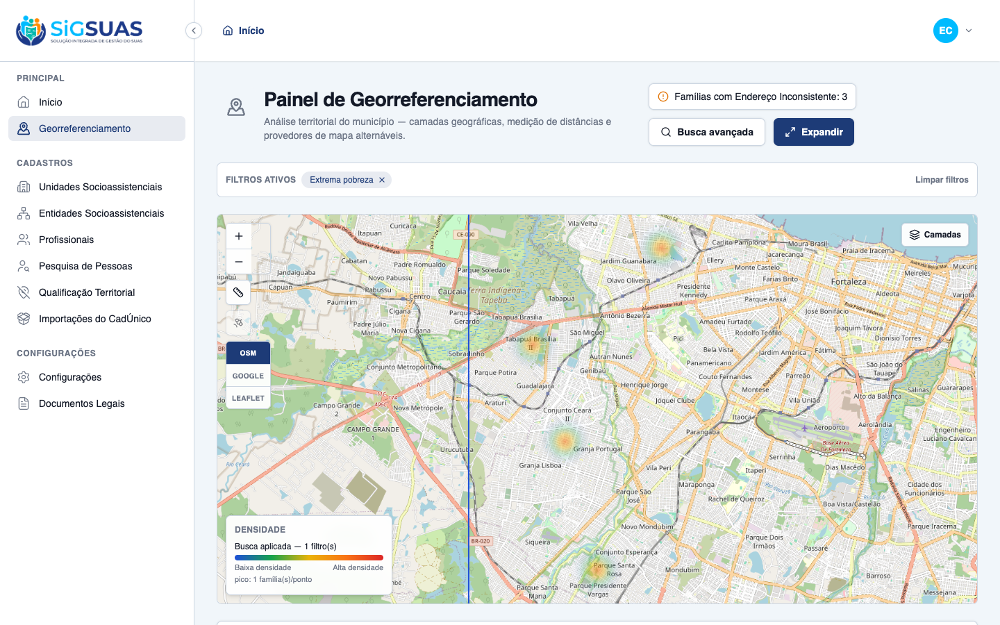

Relatório de Critérios de Aceite — HU Busca de Setor Censitário, Isolamento e Inconsistências
Resumo
3 critérios de aceite (CA06–CA08 da história original do painel geo) — CA06 e CA07 com código novo, CA08 evidência-somente (indicador entregue na HU-GEO-01). Entrega 100% client (zero backend): as listas de setores do resumo passam a exibir o código IBGE (fonte mono) junto ao nome, e a seleção de setor virou combobox pesquisável (filtro por código ou nome, acento/caixa-insensível, navegável por teclado), preservando o fluxo Buscar → Aplicar → fly-to → resumo isolado. O ciclo de revisão rendeu 3 correções antes do aceite: bug de navegação por teclado (primeira seta pulava 'Todos os setores'), consistência código+nome na lista de resultados do próprio modal, e flip do listbox para cima quando não há espaço abaixo (clipping detectado na validação visual das evidências). Resultado geral: todos os critérios atendidos. Regressão backend: Pest geo-panel 51 testes / 186 asserções; suíte completa 2722 passed (única falha = MinioConnectivityTest, pré-existente catalogada). Client: ESLint 0, build vue-tsc limpo, Vitest 114 arquivos / 924 testes.
| CA | Critério | Status |
|---|---|---|
| CA06 | Atualização estatística por Setor Censitário — códigos e contagens (PO) | ATENDIDO · navegador |
| CA07 | Isolamento de dados por busca de Setor Censitário (PO) | ATENDIDO · navegador |
| CA08 | Visibilidade de endereços inconsistentes — indicador fixo (PO, evidência-somente) | ATENDIDO · navegador |
CA06 — Atualização estatística por Setor Censitário — códigos e contagens (PO) ATENDIDO · navegador
Critério (Gherkin): Dado que apliquei um filtro de vulnerabilidade, Quando as manchas de calor aparecem no mapa, Então o painel lateral exibe os códigos das Unidades Territoriais (Setores Censitários) com suas respectivas contagens de famílias afetadas.
Como foi testado: Abrir o painel → expandir o Resumo analítico no estado neutro (lista zerada) → aplicar Extrema pobreza → conferir a distribuição por setor.
- Estado neutro: os 3 setores do município listados com CÓDIGO IBGE em fonte mono (230440005000001/2/3) + nome + contagem 0.
- Com filtro aplicado: "230440005000001 · Setor Fixture 001 - Oeste — 4" (código sempre visível; antes o código sumia quando havia nome).
- A lista de resultados dentro do próprio modal de busca segue o mesmo padrão código+nome (uniformização aplicada na revisão).


CA07 — Isolamento de dados por busca de Setor Censitário (PO) ATENDIDO · navegador
Critério (Gherkin): Dado que pesquiso e seleciono o código de um setor censitário específico na barra de pesquisa do mapa, Quando a ação é processada, Então o mapa foca automaticamente no perímetro desse setor e o painel lateral de resumos passa a exibir apenas a linha e os indicadores estatísticos dessa unidade territorial.
Como foi testado: Busca avançada → combobox Setor censitário → digitar 230440005 (filtro por código), OESTE (filtro por nome, caixa/acento-insensível) e zzz (estado vazio) → selecionar o setor por teclado (setas + Enter) → Buscar → Aplicar no mapa.
- Combobox pesquisável substitui o select nativo: digitar filtra as opções por código OU nome (normalização NFD); "Todos os setores" permanece sempre acessível; estado vazio "nenhum setor encontrado" com i18n.
- Listbox abre PARA CIMA quando não há espaço abaixo (flip, correção da revisão) — todas as opções visíveis, sem clipping pelo corpo do modal (data-flip="up" verificado no DOM).
- Navegação por teclado validada ao vivo: 1ª seta foca "Todos os setores", 2ª avança para a opção real, Enter seleciona (bug da 1ª seta corrigido na revisão).
- Ao aplicar: fly-to automático para o perímetro/bbox do setor e resumo analítico ISOLADO na linha única "230440005000001 · Setor Fixture 001 - Oeste — 4" (famílias nos filtros ativos: 4), ocultando os demais setores.
- Contrato preservado: payload sector_uuid e fluxo existentes intactos (Pest geo-panel 51 verdes no apêndice).




CA08 — Visibilidade de endereços inconsistentes — indicador fixo (PO, evidência-somente) ATENDIDO · navegador
Critério (Gherkin): Dado que o painel de georreferenciamento está aberto, Quando olho para os indicadores laterais, Então visualizo de forma fixa a métrica "Famílias com Endereço Inconsistente: X", indicando a volumetria total do município.
Como foi testado: Conferir o indicador no header da página e no cabeçalho da faixa de resumo, sem filtros (estado neutro) e com filtro ativo. Funcionalidade entregue na HU-GEO-01 — nesta HU é regressão/evidência, sem código novo.
- "Famílias com Endereço Inconsistente: 3" fixo no header e no cabeçalho do resumo, no estado neutro (screenshot do CA06) e com filtro aplicado — total real do município (3 inconsistências abertas no banco), independente dos filtros.

Anexo — Cobertura automatizada (Pest, --filter=GeoPanel — 51 testes / 186 asserções; suíte completa 2722 passed, única falha pré-existente catalogada MinioConnectivityTest)
PASS Tests\Unit\Services\Geo\GeoPanelQueryServiceTest ✓ it filters extreme_poverty by per_capita_income against the configu… 0.32s ✓ it filters single_person as exactly one ACTIVE member 0.03s ✓ it filters receives_pbf on the family flag 0.01s ✓ it filters member flags (child_labor, homeless_situation, has_disab… 0.05s ✓ it filters indigenous_quilombola as an OR between the two family fl… 0.02s ✓ it filters gpte by any traditional group, refinable by traditional_… 0.02s ✓ it intersects multiple criteria with AND (RN06) 0.03s ✓ it classifies expired as more than 24 months since source_updated_a… 0.02s ✓ it classifies expiring as between 19 and 24 months since source_upd… 0.02s ✓ it restricts by sector_uuid (SQLite fallback: sector city = family… 0.02s ✓ it aggregates by sector, groups anonymous points and computes the b… 0.02s ✓ it ignores families without an active locatable address point 0.02s ✓ it scopes every aggregate to the given tenant (RN01) 0.02s ✓ it validates that a sector belongs to the tenant municipality (RN08… 0.01s PASS Tests\Feature\Api\Client\GeoPanelExportTest ✓ it creates a pending export with the immutable filters snapshot and… 0.06s ✓ it blocks the export with 422 and the guidance message when no effe… 0.02s ✓ it requires the map image for pdf exports and stores it under the t… 0.03s ✓ it rejects a map image that is not a base64 png 0.02s ✓ it lists and shows only the exports of the active tenant, 404 on cr… 0.03s ✓ it downloads a completed export and refuses one still pending 0.03s ✓ it generates the xlsx from the filters snapshot with the tenant pre… 0.04s ✓ it generates the pdf composing the map image sent by the client (CA… 0.13s ✓ it marks the export as failed with the error message when the job f… 0.02s ✓ it neutralizes formula injection on every text cell of the spreadsh… 0.01s PASS Tests\Feature\Api\Client\GeoPanelLayerDataTest ✓ it merges a globally published layer after the builtins, keeping th… 0.02s ✓ it shows a selected-audience layer only to the covered tenant (CA43… 0.02s ✓ it never lists draft or inactive layers on the tenant panel (CA48/R… 0.02s ✓ it reflects audience/status changes on the very next fetch — no cac… 0.02s ✓ it executes the layer criteria strictly under each consumer tenant… 0.03s ✓ it answers 404 (never 403) for a layer that is not visible to the t… 0.03s ✓ it serves the CURRENT definition of the layer — an admin edit refle… 0.03s ✓ it shapes the payload by representation: markers, boundaries and he… 0.03s ✓ it denies the layer data endpoint to an operator without the geo_pa… 0.02s PASS Tests\Feature\Api\Client\GeoPanelTest ✓ it returns the tenant municipality with geometry, centroid and the… 0.04s ✓ it responds 409 geo_panel.city_unavailable when the tenant has no r… 0.02s ✓ it responds 409 when the municipality geometry exists but is inacti… 0.02s ✓ it lists exactly the 3 builtin layers with the stable contract (CA2… 0.02s ✓ it serves the census sectors of the tenant municipality as a GeoJSO… 0.02s ✓ it serves the tenant social units as anonymous points with type_cod… 0.02s ✓ it applies the AND intersection of combined criteria scoped to the… 0.03s ✓ it never leaks families from another tenant in the search (RN01/CA3… 0.02s ✓ it returns an empty payload when no record matches, so the map stay… 0.02s ✓ it rejects a search without any effective criterion (Seção 10 — reg… 0.02s ✓ it rejects a sector_uuid that belongs to another municipality (RN08… 0.02s ✓ it always includes the fixed RN07 indicator in the summary, even wi… 0.03s ✓ it aggregates the summary by census sector under the active filters… 0.02s ✓ it denies every geo-panel endpoint to the base operator without the… 0.02s ✓ it grants the full panel to the operator once the geo_panel_viewer… 0.03s ✓ it grants the full panel to the Master without any add-on role (RN2… 0.02s ✓ it does not let the geo_panel_viewer role in Tenant A open the pane… 0.02s ✓ it exposes geo_panel_viewer as an add-on role, never a hierarchy po… 0.02s Tests: 51 passed (186 assertions) Duration: 1.87s